|
Jayendran Ravindran
I'm currently interning in the cell manufacturing team at Tesla Giga Texas,
developing and validating novel, efficient processes. I'm a graduate student at Purdue University, majoring in Industrial Engineering.
I bring with me two years of work experience as an Industrial Engineer at Jk Tyres.
I graduated from the National Institute of Technology, Tiruchirappalli in 2022 with a major in
Production Engineering and minor in Management Studies.
|
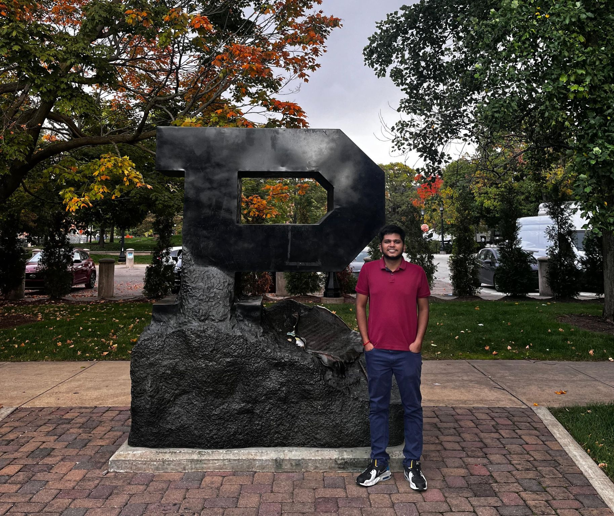
|
Email /
Resume /
LinkedIn /
One-slider /
Tableau /
Google Scholar /
Substack /
Medium /
Linktree
Work Experience
My core competencies lie in operational excellence, cross-functional collaboration,
and data-driven decision making.
|

Process Development Engineer, Cell manufacturing
Tesla Giga Factory, Austin, TX
May 2025 - December 2025

Industrial Engineer
JK Tyre & Industries Ltd., Chennai, India
August 2023 - June 2024
🏆Awarded Best Graduate Engineer Award out of 30+ campus recruits.
- Project: Installation of battery charging station in warehouse.
Impact: ▼60% in forklift downtime;
▲180K in annual dispatch value.
Skills: Layout design (AutoCAD), Material flow analysis(Spaghetti diagram), Cross-functional collaboration.
- Project: Debottlenecking of truck tire assembly line.
Impact: ▲45% in bottleneck machine capacity; Saved $12K in CapEx & $13K in OpEx.
Skills: Value stream mapping(VSM), Root cause analysis(RCA), PDCA, Kaizen, Jigs & Fixtures.
- Project: Optimization of daily labor utilization.
Impact: ▼14% in LHPU; Saved $700K in annual labor cost.
Skills: Time & motion studies, Line balancing, Cycle time-based headcount allocation.
Manufacturing Engineer
JK Tyre & Industries Ltd., Chennai, India
August 2022 - August 2023
- Project: Production ramp-up of radial tire production.
Impact: ▲2.3% in tire building capacity; Ramped up by 400 units/day.
Skills: Capacity planning, Time & motion studies, SMEDs.
- Project: Automated KPI Dashboard (OEE, LHPU, Scrap Rate).
Impact: ▼50% in manual processing time.
Skills: Power BI, Excel VBA.
- Project: Safety Improvement Circle Leader (5 associates & trainees)
Impact: Installed pedestrian warning system for pedestrians; Eliminated collision hazards.
Skills: Teamwork, Leadership, Project Management.
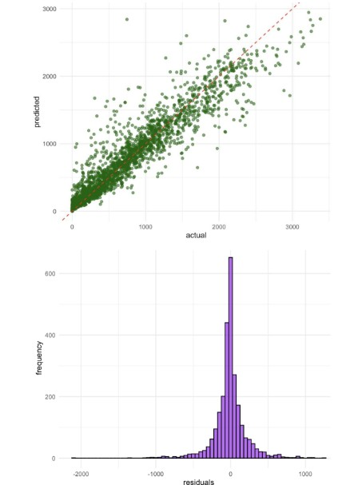
Predictive ML model for rental bike demand of Seoul city
(Course project)
August 2024 - December 2024
Presentation /
Code
Impact: ▼50% in Root Mean Square Error (RMSE); Improved accuracy.
Skills: Machine Learning (Regression, Random Forest, GAM, Decision Tree), Python (Pandas, Matplotlib, NumPy, SciKit-Learn).
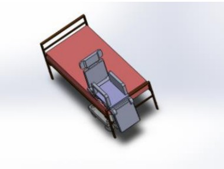

Convertible wheelchair with assist-free transfer support
(Bachelor's thesis)
January 2022 - May 2022
Presentation /
Report
Guide: Dr.-Ing Muthukannan Duraiselvam, Department of Production Engineering, NIT-T.
Impact: Eliminated the need for external assistance.
Skills: 3D CAD (SolidWorks, Siemens NX), FEA (ANSYS Workbench).
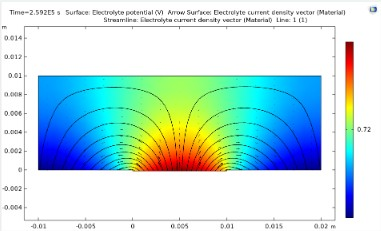

Numerical Modeling and Simulation of Friction Stir Processing of AA1100
(Summer Internship)
January 2022 - May 2022
Report
Guide:
Prof.Surjya Kanta Pal, Department of Mechanical Engineering, IIT Kharagpur.
Impact: Achieved 97.7% accuracy in predicting the corrosion resistance of AA1100 during Friction Stir Processing (FSP).
Skills: COMSOL Multiphysics, Welding Processes, Thermodynamics.
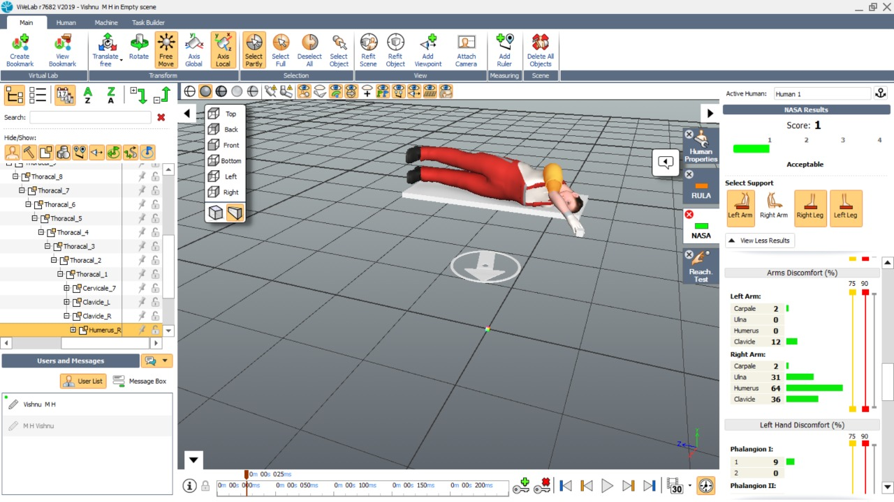
Retractable Berth Accessibility Mechanism
(Design Club Project)
August 2019 - December 2019
Report
Impact: Reduced material consumption by 22%; lowered stress levels to 13%.
Skills: SolidWorks, ANSYS Workbench, Fabrication, Ergonomics.
Publications
My research was focused on design, manufacturing, mechatronics, ergonomics and product development.
|

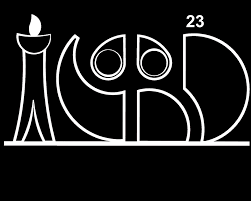
Design and Development of Ergonomic and Customizable Walking Cane
Paper / Poster
Published on January 2023
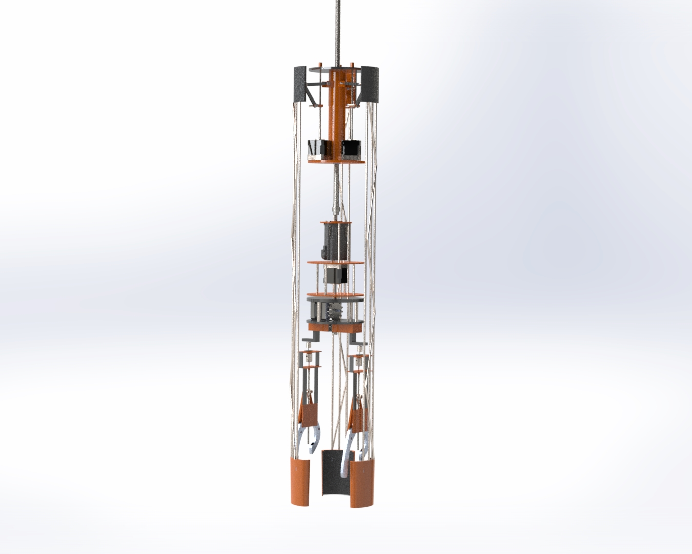

Conceptual model for improving maneuverability in borewell rescue devices
Paper / Poster
Published on November 2021
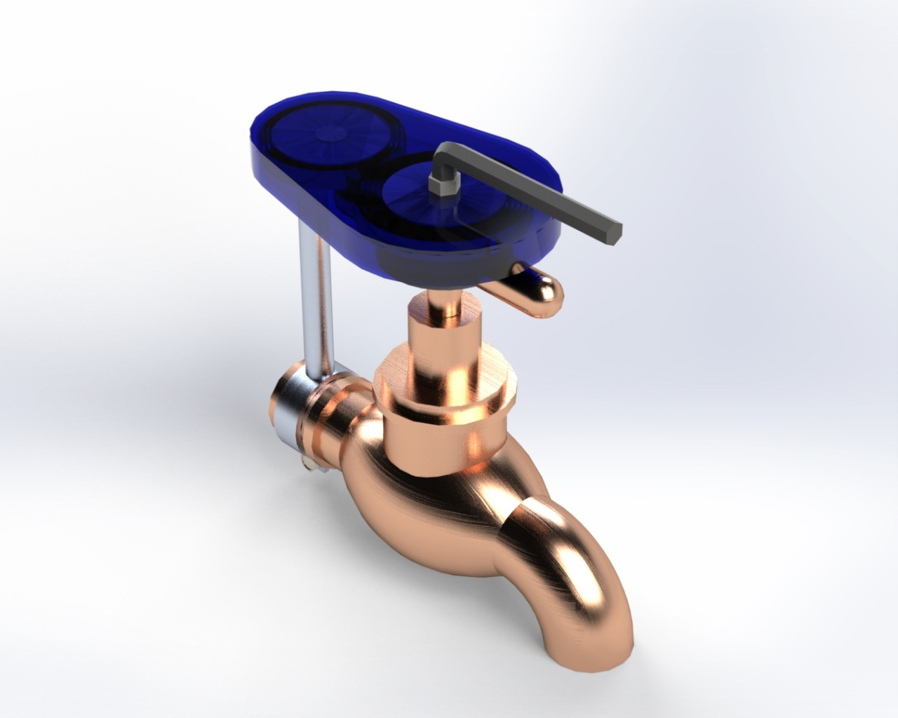
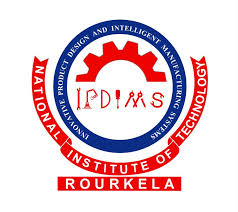
Novel Water-Conserving Faucet Attachment
Paper
Presented on December 2020; Published on May 2022

RFID Implementation for Medical Inventory Tracking
January 2025 - April 2025
Presentation /
Figma
Takeaways: Anticipate uncertainties (layoffs, increased costs) and prepare countermeasures in advance.
Skills: Project Management, Gantt chart,
MS Project, Figma, Critical Path Method(CPM), Budgeting, Scheduling, Resource Allocation.

WEF Travel & Tourism Development Index 2024 Dashboard
Tableau
Takeaways: Ensure the data's reliability through data cleaning, scaling, and validation.
Skills: Tableau, Excel VBA, Data visualization.
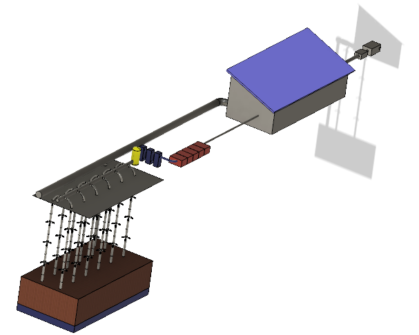

Small scale LFG collection system
🏆Secured 2nd position in Caterpillar IDP Challenge, IIT Madras.
Report
Takeaways: Analyse and validate the feasibility of a solution before proposal/implementation.
Skills: Autodesk Fusion 360, ANSYS Fluent, Business case development.
Leadership & Volunteering
|
July 2021 - June 2022
Impact: Spearheaded 5+ student-alumni engagement events (with 100+ footfalls) focusing on different industries.
Skills: Event management, Content management, Networking.
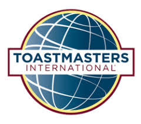
July 2021 - June 2022
Impact: Organized workshops, demo meets and induction, successfully onboarding 10 members.
Skills: Leadership, Organizational skills, Interpersonal communication.
Volunteering
- Reviewer, Grant Review & Allocation Committee, Purdue Graduate Student Government. (October 2024 - May 2025)
- Area ISC & TT Contest Chair, Toastmasters NIT-T. (March 2022)
- Area ISC & TT Chief Judge, Colossus Toastmasters. (March 2022)
- Newsletter Chair, Toastmasters NIT-T. (December 2022)
- Trainer (SAA), Officers Training Program, Toastmasters International. (September 2022)
- Project Mentor, Designers' Consortium. (January 2021 - March 2021)
- Trainer (Machine Design), Techathlon Design Workshop, Designers' Consortium. (February 2020)
🏆Secured 2nd position in ATMakeathon, R2D2, IIT Madras.
- Sergeant at Arms (SAA), Toastmasters NIT-T. (July 2019 - June 2022)
Skills: Presentation skills, Critical thinking, Canva, Mentoring, Training.
|
Relevant coursework & certifications
|
|
Industrial Engineering
|
Work design and facility planning (Undergraduate)
Lean manufacturing (Undergraduate)
Analysis of production systems and IE (Undergraduate)
Job design (Graduate)
Economic decisions in engineering (Graduate)
Risk analysis methods and applications (Graduate)
The hidden value - Lean in manufacturing and services (Coursera)
|
|
Manufacturing & design
|
Manufacturing systems simulation (Undergraduate)
Computer-integrated manufacturing (Undergraduate)
Production drawing & cost estimation (GD&T) (Undergraduate)
Mechatronics & industrial automation (Undergraduate)
Certified SolidWorks Associate (CSWA) (Dassault Systemes)
Design of machine elements (Undergraduate)
Kinematics & dynamics of machines (Undergraduate)
|
|
Supply Chain & Quality
|
Supply chain management (Undergraduate)
Probability & Statistics (Undergraduate)
Quality, reliability & safety engineering (Undergraduate)
Quality control (GD&T) (Graduate)
Design of Experiments (SAS)
Six Sigma Principles (Coursera)
|
|
Data Analytics
|
Machine learning & applications (Graduate)
Introduction to Programming with MATLAB (Coursera)
Google data analytics certification (Grow with Google)
Entry-level Programming in Python (Purdue EBEC)
|
|
Management
|
Production & operations management (Undergraduate)
Financial management (Undergraduate)
Marketing management (Undergraduate)
Project management (Graduate)
Google project management certificate (Grow with Google)
|
|

{kind=link}
{kind=link}